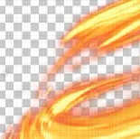
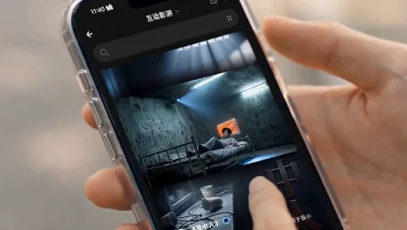
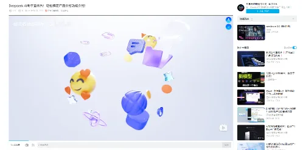
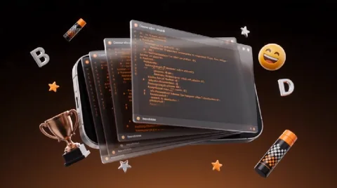
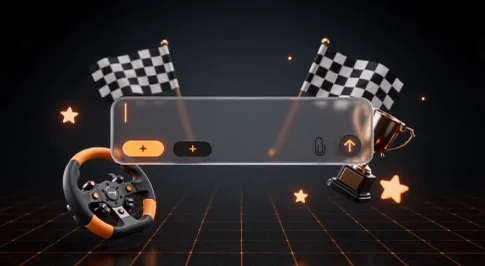
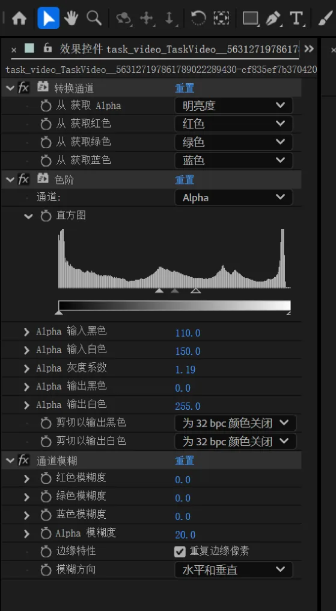
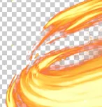

《造化工坊》宣传视频
4 天 3 版方案：角色设定、表演构思、影调设定、动效设计
《造化工坊》宣传片段
方案片段四天三版的宣传片方案
Other Projects · 01 · App Promo
4 天 3 版：同一句“输入需求 → 生成 → 手机里玩到游戏”，换三套影调；最后一日加急动效拆开生成、再合成。











宏观 · 三件事
三版影调
浅蓝玻璃 / 暗底橙光 / 糖果紫，核心转场都是“文字变成物体”。
多帧截取 · 二次生成
先比各模型的理解力；整段生成失败后，截帧作参考再生成。
古法补位
火焰黑底单独生成，AE 抠 Alpha 叠回，拼成可交付成片。
4 天 · 3 版
三套方案并行 · 一日加急